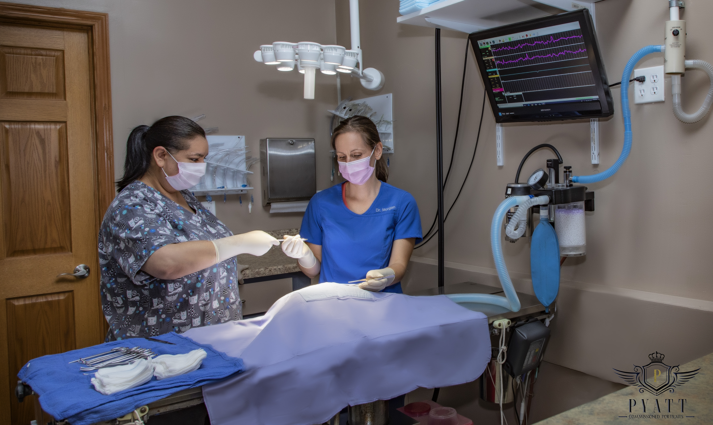

<div class="modal-body">
  <div class="col-md-12">
    <div class="row">
      <div class="exit-modal" data-dismiss="modal">
        <i class="fa fa-times">
        </i>
      </div>
    </div>
      <h2 class="modal-title">Surgery</h2>
    <div class="row col-md-12">
    <div class="row">
        <div class="col-sm-6">
          <ul>
            <li>Pain Management: multi-modal approach including local anesthetics</li>
            <li>Complimentary Blood Screening</li>
            <li>State-of-the-art Monitoring - continuous</li>
            <li>Oxygen administration - continuous</li>
            <li>Dedicated Nursing Staff</li>
          </ul>

          <div class="row">
            <p> From routine surgical procedures, such as spaying and neutering, to more complex surgeries,
              we look forward to the opportunity to care for your pet’s surgical needs. </p>
          </div>
        </div>
        <div class="col-sm-6">
        <span class="modal-pic"></span>
        </div>
      </div>
      <!--row-->
    </div>
    <!--col-md-12-->
  </div>
  <!--row-->
</div>
<!--modal body-->
